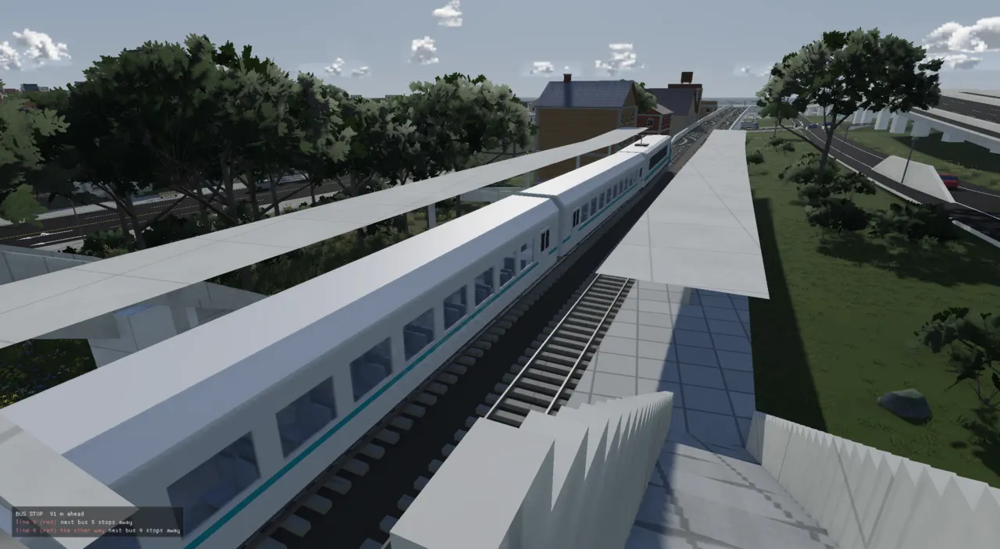
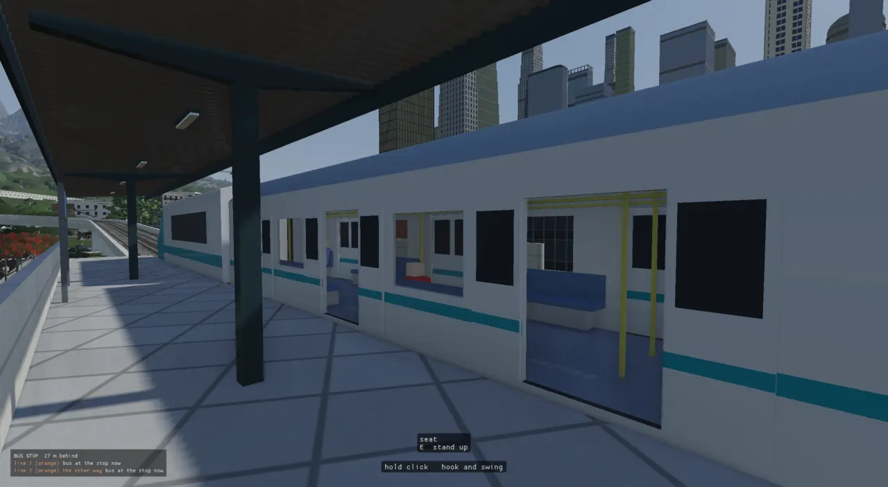
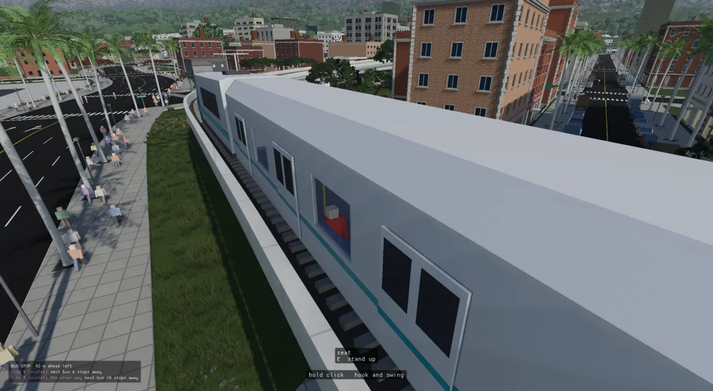
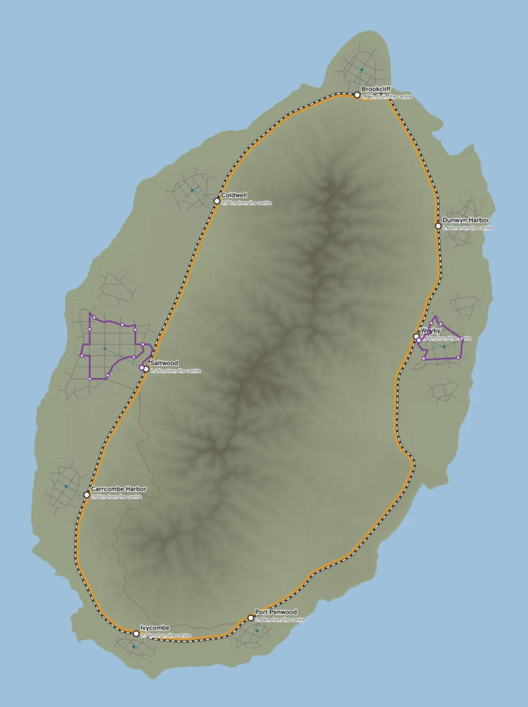
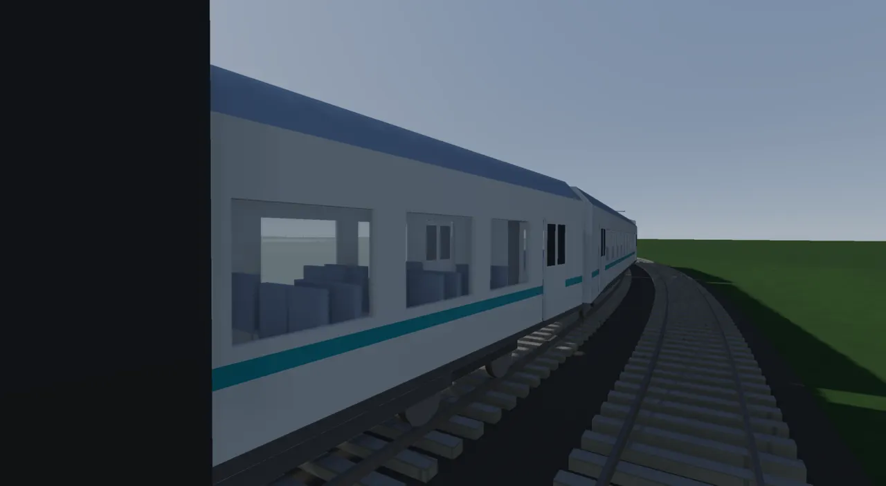
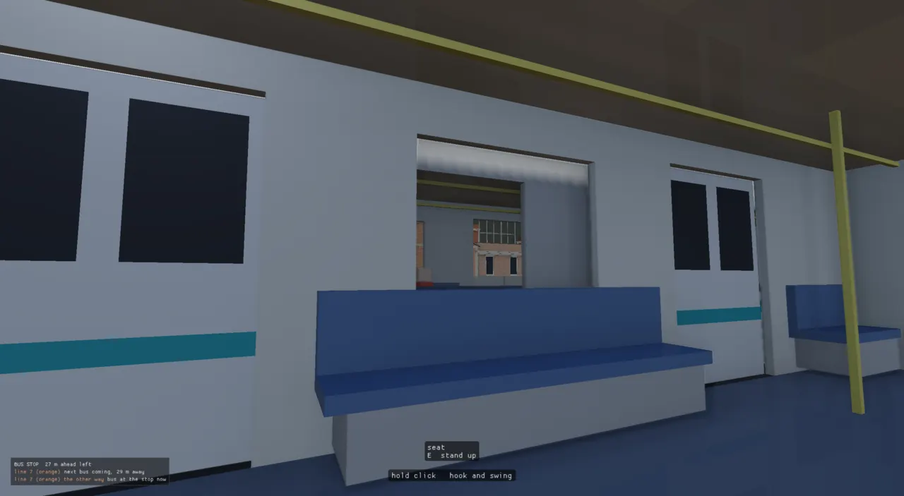

An island-wide main line, a light-rail loop in each big city, stations you can walk onto, carriages you can walk through, and people who take the train to the next town. The idea that makes it cheap: a track is a road class. The road builder lays it like any lane, and the trains run on exactly the rails it drew.

Glenn (2026-10-10): "it makes sense if it follows the highway in a loop and there's a station. There should be trains going in each direction ... the train system should piggy back off our other algorithms and systems of construction -- it should define rail lines and we should probably build them like we build lanes of the freeway ... run 24 hours a day at an interval ... carriages ... like the bus where you can move around the carriages and between them and they shouldn't be jittery."
That is four systems: track that climbs and bridges like a road and crosses roads without anyone driving onto it; train motion that respects curves, platforms and the train ahead; carriages that bend round curves and carry a walking player without jitter; and riders, so stations are used. Plus everything that makes a station a place: a way in from the street, stairs, canopies, lamps, name boards, sounds.
From plan to passengers. The builder (blue, top) is the same lanes builder that paves the roads; the sim (blue, middle) knows nothing about how the track was made, only the railhead lines and platforms it was handed.
ADR-0055 had predicted it: a new world system should arrive as "fields, rules and crossing templates, never a new
pipeline stage", and named rail as "a class + level-crossing template". ADR-0153 did exactly that.
RoadClassSpec grew a track flag, and the built-in classes include two tracks:
// double track: one track per direction at 4 m centres, a railway's grade (2.5 %) over a long window add("rail", 4.0, 1, 1, 0.0, 0.0, 0.0, 3, 0.025, 400.0, 0.8); m["rail"].track = true; // a parapet where the track stands on structure; nothing at grade (the lab's own fence comes later) BarrierSpec wall; wall.kind = BarrierKind::Wall; wall.h = 1.0; wall.set = true; m["rail"].edges[3] = wall; // EdgeRole::Elevated // LIGHT RAIL in a town (Glenn: "Bigger cities: light rail ... a loop (Yamanote). Start simple."): a double track at // 3.6 m centres, a tram's grade (5 %) over a street's window, so it climbs over a cross street and back in a block add("light_rail", 3.6, 1, 1, 0.0, 0.0, 0.0, 2, 0.05, 120.0, 0.7); m["light_rail"].track = true; m["light_rail"].edges[3] = wall;
Everything the builder does for a road happens to a track: its profile is grade-limited over its window (2.5 % over 400 m for the main line, so it rides long and level), it bridges valleys and gets piers, the ground is conformed to it. Only the mesher differs: a deck whose lanes are all track is a ballast bed, not asphalt, and each track lane gets sleepers every 0.65 m and two rails at standard gauge, with no paint and no junction boxes.
// THE TRACK on one lane: a sleeper every 0.65 m and two rails swept along the lane's centreline at gauge.
void trackKit(RenderMesh& sleepers, RenderMesh& rails, const Result& r, int li) {
const Lane& l = r.lanes.lanes[static_cast<size_t>(li)]; const DeckHeight& H = *r.heights;
if (l.s.size() < 2 || l.s.back() < 1.0) return;
const double len = l.s.back();
for (double st = 0.3; st < len; st += 0.65) {
const Vec2 p = pointAt(l.xy, l.s, st), t = tangentAtStation(l.xy, l.s, st); const double z = H.deck(li, p);
trackBox(sleepers, p, t, 1.3, 0.13, z - 0.04, z + kSleeperTop, kSleeper, false);
}
Two rules keep cars off it. Tracks are left out of the road twin, so no car, walker, lot or sign ever routes
onto one. And since ADR-0159 the published deck field knows what runs on each spine (UnionSpine::use:
Road, Track or Footway); a street car under a viaduct no longer took the rail's height (Glenn: "cars weirdly stuck in
the tracks"). Lots keep 4.5 m off a railhead and 10.5 m beside a stop (lanesTrackKeepOut), and every tree
placer asks DrawnRoad::blocksTree, which includes the trains' room: 1.75 m each side of the track
plus 1 m, 5.5 m over the rails (ADR-0219, after trees grew through passing trains).
There are no level crossings. Any crossing with a track is a grade separation whatever the scene's rules, and the
builder lifts the track over the road at its own grade unless the road already clears it. Lifting the higher of
the two had raised Saltwood's streets over the line at 18 % (ADR-0154). The design stage's crossing policy says the
same thing in one line (planCrossings: "a track and anything: a bridge").
// A TRACK crossing anything (a road, a ramp, the freeway) is a grade separation, whatever the scene's rules: there are // no level crossings yet (the island loop, 2026-10-11). Two of the graph's crossings that must be structure. bool separates(const RoadLabGraph& g, const EdgeSpec& a, const EdgeSpec& b); bool anyTrack(const RoadLabGraph& g, const EdgeSpec& a, const EdgeSpec& b); // a track is structure where a road ends under it too
Two more vertical rules came from the light rail. A city loop crosses a side street every ~125 m, each lift
with a ~200 m approach, so no joint between track sections can be clear of all of them. So a track's holds carry
across joints (chainTrackFloors): each section takes its neighbours' holds into its own stations,
and the next section no longer meets a lift 4 m lower. And a road that ends under a track is structure too:
a dead end under the light rail had held the line 7.3 m off its profile (ADR-0158).
Each track lane leaves the builder as a RailTrack: the railhead line in the direction trains run on
it, about 2 m apart, and its platforms in its own stations. It rides in the city bundle as JSON
(city/e<n>/rail/tracks) beside the meshes, so a train stands on exactly the rails that were drawn.
A graph with a track class also keys kRailBuildTag, so the track kit can change without re-baking
road-only levels.
// A platform beside a track, in the track's own stations (metres along `pts`). struct RailStop { std::string name; double s0 = 0, s1 = 0; int side = +1; // which side of the train it is on, looking the way the train runs: +1 left, -1 right double top = 0; // platform top, world height // THE WAY IN: where the station's footway leaves the street (plan x, z) -- what a bus line serves bool hasAccess = false; Vec2 access{0, 0}; std::vector<Vec3> lamps; // its night lights (world), under the canopy's fittings }; struct RailTrack { std::string edge, cls; // the graph edge it was built on, and its class int dir = +1; // +1 along the edge's spine, -1 against it std::vector<Vec3> pts; // railhead centreline (world x, height, z), in running order, ~2 m apart std::vector<RailStop> stops; };
Platforms are authored on the edge, in its stations; the builder places each outside the outermost track on that
side, its edge kPlatformGap (1.55 m) from the track centre and its top level with a carriage floor:
// A station platform beside a track edge, authored on the edge: "platforms": [{"name": "Central", "s0": 300, // "s1": 420, "side": "both", "w": 4.5}]. Built on the OUTSIDE of the edge's outermost track on that side, its // edge `kPlatformGap` off the train body, its top at the height a carriage floor stands (railhead + h). struct PlatformSpec { std::string name; double s0 = 0, s1 = 0; // stations along the edge's spine int side = 0; // 0 both, +1 the spine's left (plan), -1 its right double w = 4.5, h = 1.05; // width, and the top above the railhead };
Two kinds of station (schematic). The island loop runs near ground level, so its way in climbs onto a footbridge and stairs lead down (ADR-0155). A city loop is lifted over every street it crosses, so its stations are reached from below (ADR-0158).
A station's way in is just another class: footway, a 3 m path paved as sidewalk, never painted, left
out of the twin. Its grade may run to 60 %, and wherever it passes 15 % (kFootwayStairGrade) the deck is
built as treads with ~0.175 m risers. The first island bake held footways to a ramp's grade: too short for 11–24 m
climbs, they floated whole and dragged 26 lifts and a 13 m node mismatch through the nearby diamonds. At a stair's
pitch they follow the ground and climb only the last 20–30 m. Where a footway crosses a track over a platform,
stationStairs lays a flight down onto each platform along its back edge. Each station's way in also
becomes a bus anchor, so a bus line calls at every station's door (ADR-0155).
ADR-0159 gave stations depth and light: ribbed steel canopies on posts every 12 m with a fascia and a linear lamp every 6 m, lamps that glow on the dusk ramp and join the street lamps' nearest-N point-light pool (so a station never takes more light slots), white-on-blue name boards 16 m from each platform end (ADR-0156), and a platform board in the HUD: every line calling here, the next two trains, and minutes until they stand at this platform.


Lines are derived, not drawn, and added to a graph already written, so the island is not re-grown for
them (city_plan island-rail GRAPH LEVEL --write and city-rail,
world/island_rail.h).
balance 0.5 (cut as well as fill).
The built-in 2.5 % fill-only class rode 28 of 37 km of coastal hills on viaducts.struct IslandRailOptions {
double offset = 45.0; // carriageway centreline -> the track pair's centreline, outward
double spacing = 10.0; // the line's point spacing (m)
double platformLength = 140.0; // a station's platform (an intercity train is ~95 m)
double platformWidth = 4.5;
double straightRadius = 900.0; // the tightest curve a platform may stand on
double crossingClear = 150.0; // no road crossing (a bridge, with its approach) this near a platform's ends
double maxTownDistance = 2500.0; // a town farther than this from the line gets no station
std::string idPrefix = "rail_loop";
// THE LINE'S CLASS on the island: the built-in rail (2.5%, fill only) rode 28 of 37 km of hills on viaducts.
// A main line that cuts through what it cannot climb, at a mountain main line's grade.
double gMax = 0.035;
double balance = 0.5;

~/Claude/rail/island_rail_plan.svg,
2026-10-10), drawn before anything was built. It is a plan, not the result: the built light-rail loops are shorter
than drawn here, and there are no level crossings (every track crossing is a bridge).RailSim (src/apps/citysim/rail_sim.h) reads only the RailTracks. Its data
is small:
struct TrainKind {
std::string name = "intercity";
double locoLength = 19.0; // the locomotive (a modern electric: no steam)
double carLength = 24.0; // each passenger carriage
int cars = 3; // carriages behind the locomotive
double gap = 0.9; // coupler to coupler, where the gangway bridges
double width = 2.9, floor = 1.1; // body width; floor above the railhead (a platform's top)
double vmax = 33.0; // m/s (120 km/h) on the straight
double accel = 0.7, decel = 0.8; // service rates, m/s^2
double lateral = 1.0; // the curve speed: v^2 / r <= this
double dwell = 30.0; // seconds at a platform, doors open for all but the first and last few
double length() const { return locoLength + cars * carLength + cars * gap; }
};
// ...
struct RailLine {
std::string name;
std::string cls; // its track class (rail, light_rail, metro): what stock runs it
std::vector<engine::Vec3> pts; // railhead centreline, running order
std::vector<double> s; // station of each point
double length = 0;
bool loop = false;
std::vector<engine::RailStop> stops; // in this line's stations, sorted
std::vector<double> vlim; // per point: the speed the track allows (curves, braking ahead of them)
// the railhead point and the running direction at station `st` (wrapped on a loop, clamped otherwise)
engine::Vec3 at(double st) const;
double wrap(double st) const;
double speedLimit(double st) const;
};
// ...
struct Train {
int line = -1;
TrainKind kind;
double s = 0; // the head's front, along the line
double prevS = 0; // ...at the previous step, for drawing between steps
double v = 0;
int nextStop = 0; // index into the line's stops
bool dwelling = false;
double dwellLeft = 0;
int doorSide = 0; // while the doors are open: +1 the train's left, -1 its right; 0 shut
double odometer = 0;
};
The rail data. A train is little more than a distance along a line; everything else is derived from it.
A track whose end lies within 3 m of another's start, heading on the same way (dot product of the directions above 0.7) and of the same class, runs on into it. A chain that comes back to its start is a loop. A double-track loop is therefore two lines, one each way, and nothing ever switches or crosses. Lines never join across classes: a tram never runs on into the main line.
// which track each one runs on into: its end within joinTol of the other's start, heading on the same way std::vector<int> succ(static_cast<std::size_t>(n), -1), pred(static_cast<std::size_t>(n), -1); for (int i = 0; i < n; ++i) { const auto& A = tracks[static_cast<std::size_t>(i)].pts; if (A.size() < 2) continue; const Vec3 endDir = flatDir(A[A.size() - 2], A.back()); double best = joinTol; for (int j = 0; j < n; ++j) { const auto& B = tracks[static_cast<std::size_t>(j)].pts; if (j == i || B.size() < 2 || tracks[static_cast<std::size_t>(j)].cls != tracks[static_cast<std::size_t>(i)].cls) continue; // (a tram never runs on into the main line) const double d = dist(A.back(), B.front()); if (d >= best) continue; const Vec3 startDir = flatDir(B[0], B[1]); if (endDir.x * startDir.x + endDir.z * startDir.z < 0.7) continue; best = d; succ[static_cast<std::size_t>(i)] = j; } }
Each point gets a limit from the curve through its neighbours five points either side (v²/r ≤ the kind's
lateral, 1 m/s²), then a backward pass brakes for it ahead of time, so a train meets a curve already
slow enough:
// THE SPEED THE TRACK ALLOWS: the curve's (v^2 r <= lateral, measured over 10 m either side), then braked // for ahead of time -- a train meets a curve already slow enough for it const TrainKind kind = kindOf(L.cls); const std::size_t m = L.pts.size(); L.vlim.assign(m, kind.vmax); for (std::size_t i = 0; i < m; ++i) { const std::size_t span = 5; std::size_t a = i >= span ? i - span : (L.loop ? i + m - 1 - span : 0); std::size_t c = i + span < m ? i + span : (L.loop ? i + span - (m - 1) : m - 1); if (a >= m) a = 0; if (c >= m) c = m - 1; const double k = curvature(L.pts[a], L.pts[i], L.pts[c]); if (k > 1e-6) L.vlim[i] = std::min(kind.vmax, std::sqrt(kind.lateral / k)); } for (int pass = 0; pass < (L.loop ? 2 : 1); ++pass) for (std::size_t i = m - 1; i-- > 0;) { const double ds = L.s[i + 1] - L.s[i]; const double next = (i + 1 == m - 1 && L.loop) ? L.vlim[0] : L.vlim[i + 1]; L.vlim[i] = std::min(L.vlim[i], std::sqrt(next * next + 2.0 * kind.decel * ds)); }
There is no schedule. A line's trains start evenly spread round it, and since every train runs the same rules, the spacing holds. How many: an intercity per ~9 km of line, a city train per ~1.5 km, two at least. The island's 37 km loop at first ran two each way, a train every ~14 minutes, and its platforms filled with people waiting (46 at 21 minutes), so it now runs four.
// THE TIMETABLE: an intercity train per ~9 km of line, a city train per ~1.5 km, two at least -- the island's 37 km // loop ran two each way, a train every ~14 minutes, and its platforms filled with people waiting (46 at 21 min) auto countOf = [](double length, const TrainKind& k) { if (const char* n = std::getenv("RT_TRAINS_PER_LINE")) return std::max(1, std::atoi(n)); return std::max(2, static_cast<int>(std::lround(length / (k.name == "intercity" ? 9000.0 : 1500.0)))); };
// THE TIMETABLE: evenly spread trains, each heading for the first platform ahead of it
for (std::size_t li = 0; li < lines_.size(); ++li) {
const RailLine& L = lines_[li];
const TrainKind kind = kindOf(L.cls);
const int count = L.length > kind.length() * 3 ? std::max(1, countOf(L.length, kind)) : 1;
for (int k = 0; k < count; ++k) {
Train t;
t.line = static_cast<int>(li);
t.kind = kind;
t.s = L.loop ? L.wrap(L.length * k / count + kind.length()) : std::min(L.length, kind.length() + 5.0);
t.prevS = t.s;
t.nextStop = 0;
for (std::size_t si = 0; si < L.stops.size(); ++si)
if (L.stops[si].s1 - 2.0 > t.s) { t.nextStop = static_cast<int>(si); break; }
trains_.push_back(t);
}
}
Each fixed step a running train picks a target speed, the smallest of four limits, and accelerates or brakes toward it. There are no signal blocks: the train ahead is simply a fourth limit, braking to stop 40 m short of its tail. Within reach of the platform at under 3 m/s it stops exactly there and dwells; the doors open two seconds after it stops and shut four before it leaves, on the platform's side.
One train's speed between two platforms (schematic): the line speed, a curve the train slowed for before reaching it, the braking parabola into the platform, the dwell, and away.
double target = std::min(t.kind.vmax, L.speedLimit(t.s));
double toStop = 1e9;
if (!L.stops.empty()) {
const engine::RailStop& st = L.stops[static_cast<std::size_t>(t.nextStop)];
toStop = st.s1 - kStopShort - t.s;
if (L.loop) toStop = L.wrap(toStop);
target = std::min(target, std::sqrt(2.0 * t.kind.decel * std::max(0.0, toStop)));
}
const double gap = gapAhead(static_cast<int>(ti));
target = std::min(target, std::sqrt(2.0 * t.kind.decel * std::max(0.0, gap - 40.0)));
if (t.v < target) t.v = std::min(target, t.v + t.kind.accel * dt);
else t.v = std::max(target, t.v - 1.5 * t.kind.decel * dt);
double ds = t.v * dt;
if (!L.stops.empty() && ds >= toStop - 0.05 && t.v < 3.0) { // at the platform: stop there exactly
ds = std::max(0.0, toStop);
t.v = 0;
t.dwelling = true;
t.dwellLeft = t.kind.dwell;
}
A carriage's pose is a function of the head's station alone. Each car's front is a fixed distance behind the
head; its body hangs between two bogie points at 18 % and 82 % of its length, each sampled on the railhead line.
The renderer interpolates only the head between its last two steps (headAt(alpha)), and every
carriage, and anyone in it, follows exactly the curve the rails draw at that moment. That is the whole anti-jitter
argument.
CarPose RailSim::carPose(int ti, int car, double alpha) const {
const Train& t = trains_[static_cast<std::size_t>(ti)];
const RailLine& L = lines_[static_cast<std::size_t>(t.line)];
double front = headAt(ti, alpha);
for (int k = 0; k < car; ++k) front -= (k == 0 ? t.kind.locoLength : t.kind.carLength) + t.kind.gap;
const double len = car == 0 ? t.kind.locoLength : t.kind.carLength;
// the body hangs between its two bogies, each on the rail
const Vec3 p1 = L.at(front - 0.18 * len), p2 = L.at(front - 0.82 * len);
Vec3 f = p1 - p2;
const double fl = f.length();
f = fl > 1e-9 ? f * (1.0 / fl) : Vec3(0, 0, 1);
Vec3 left = engine::cross(Vec3(0, 1, 0), f);
const double ll = left.length();
left = ll > 1e-9 ? left * (1.0 / ll) : Vec3(1, 0, 0);
const Vec3 up = engine::cross(f, left);
const Vec3 c = (p1 + p2) * 0.5;

rail_lab.json, 2026-10-10): coaches on a curve, each body laid between
its two bogie points.
The bus had already solved riding without jitter, and the train reuses its answer (ADR-0153). A player aboard is
not a physics body pushed along by the carriage; they are a floor point in one car's frame
(local_), walked by the ordinary move keys inside the aisle, vestibules and doorways
(walkableAt). The eye is placed on that point of the carriage as drawn this frame, in
render(), after the steps, so the view and the carriage cannot disagree. Two transitions:
// THROUGH THE GANGWAY: past the coupling's middle, the point belongs to the next car const Real hl = static_cast<Real>(coachOf(train_).length) / 2, half = static_cast<Real>(T.kind.gap) / 2; if (local_.z > hl + half - 0.05 || local_.z < -hl - half + 0.05) { const int to = local_.z > 0 ? car_ - 1 : car_ + 1; if (to >= 1 && to < sim_.carCount(train_)) { const Vec3 w = P.m.transformPoint(local_); const CarPose Q = sim_.carPose(train_, to, 1.0); Vec3 l = toLocal(Q.m, w); l.y = static_cast<Real>(coachOf(train_).floor); l.x = std::clamp(l.x, Real(-(coachOf(train_).gangwayHalf - 0.2)), Real(coachOf(train_).gangwayHalf - 0.2)); car_ = to; local_ = l; P = Q; } else { local_.z = std::clamp(local_.z, -hl - half + 0.06, hl + half - 0.06); // the train's last end: a closed door local_.z = std::clamp(local_.z, -hl + 0.2, hl - 0.2); } } // OUT OF THE DOOR: past the body's side where it is open if (T.doorSide != 0 && local_.x * T.doorSide > coachOf(train_).width / 2 + 0.3) { Vec3 out = P.m.transformPoint(Vec3(T.doorSide * static_cast<Real>(coachOf(train_).width / 2 + 0.5), static_cast<Real>(coachOf(train_).floor), local_.z)); // the capsule's centre over the platform (its own height, not the 0.7 eye offset: that left a 1.8 m body // standing 0.15 m into the platform) out.y += (cc ? cc->halfHeight + cc->radius : Real(0.9)) + 0.05; leave(out); return; }
Both ends of a coupling are the same place on the rail, so moving from one car's frame to the next is exact. Out of
the door, the capsule is placed over the platform at its own height (the first cut used the eye offset and stood a
1.8 m body 0.15 m into the platform). Debug: trains? over the control channel lists lines, stops and
every train; train_board T C puts the player aboard train T, car C.
Glenn, watching the first trains: "I don't see anyone on the train though ... there's no sound on the train ... Train stations could use the name of the station." ADR-0156 answered all three.
RailRiders (city_rail_riders.h) pins each station's way in to the nearest walkable street
node, in a street network big enough for buses (the bus anchors' rule). A walker's trip into another street
network (another town: no street joins them) goes by train when both have a station: startGoalTrip
plans it first and aims the street leg (bus if it beats walking) at the station. Within a town, a train is taken
only when it saves a minute and a sixth of the walk on trips over ~900 m, the bus's rule (ADR-0157).
struct RailTrip {
enum class Phase : uint8_t { ToStation, Entering, Waiting, Aboard, Leaving };
int from = -1, to = -1; // stations
int line = -1, fromStop = -1, toStop = -1;
Phase phase = Phase::ToStation;
int train = -1; // aboard: which train
engine::Real timer = 0; // Entering / Leaving: seconds left on the footway
engine::Vec2 spot{0, 0}; // Waiting: where on the platform
engine::Real top = 0; // ...and its height
};
A rider's journey. The footway is not in the nav graph, so walking along it is a timed absence; the
wait is a real place on the platform, drawn at the platform's top (CityRenderSystem::floorAt).
for (std::size_t ti = 0; ti < trains.size(); ++ti) {
const Train& T = trains[ti];
if (!T.dwelling || T.doorSide == 0) continue;
const int stop = T.nextStop;
const int seats = T.kind.cars * kTrainSeatsPerCar;
for (int p : riders) {
RailTrip* t = rail_.tripOf(p);
if (!t) continue;
if (t->phase == RailTrip::Phase::Aboard && t->train == static_cast<int>(ti) && t->toStop == stop) {
t->phase = RailTrip::Phase::Leaving;
t->timer = rail_.stations()[static_cast<std::size_t>(t->to)].walkIn;
t->train = -1;
--aboard[ti];
++rail_.stats.setDown;
} else if (t->phase == RailTrip::Phase::Waiting && t->line == T.line && t->fromStop == stop &&
aboard[ti] < seats) {
t->phase = RailTrip::Phase::Aboard;
t->train = static_cast<int>(ti);
++aboard[ti];
++rail_.stats.boarded;
}
}
}
The sim only reads the trains. Seats cap boarding (72 per coach, kTrainSeatsPerCar); the
renderer seats each rider in a coach picked by a hash of who they are, in three outfits. Measured headless
(ADR-0156): 24 agents sent across two towns all walked in, waited, rode, got off and took the train home, 48 trips.
On island 8, in real time, ~50 commuters choose the train at load and walk a median 1.3 km to their station; the
first reach a platform about 7 minutes in.
All procedural (sfx.h): railClack per axle as it crosses a joint, every 18 m of its
own travel, so a car's two bogies give the beat and it quickens with speed; railRumble, a seamless
loop on the nearest car scaled by speed; trainHorn, high then low, ~300 m before each platform;
trainDoorChime, a falling ding-dong as the doors open and three beeps before they shut. Heard from the
camera, so aboard they are simply near.
Five days in October. Stage 1 (2026-10-10, ADR-0153) was the test bed:
rail_lab.json, a 2.9 km loop with two stations and a bridge each side; lines of 2844 and 2869 m, four
trains, ~95 s between stations at up to 22 m/s, every lanes invariant passing. The island loop followed the next day
(ADR-0154), then platform access (ADR-0155), riders, sounds and boards (ADR-0156), light rail (ADR-0157/0158) and the
station kit (ADR-0159) by 2026-10-12. Most of the work was in the builder, not the trains: three vertical rules had
to be learned the hard way.
Rules the builder learned. (1) A shared end is a node, not an overpass: the lift pass skipped nothing at a joint, so two sections of one line "crossed" there and lifted each other 7 m at every joint, 23 km of viaduct. (2) The track moves, not the road: lifting the higher of the two raised Saltwood's streets over the line at 18 %. (3) Holds cross joints: placing joints clear of crossings was not enough in a town; the light rail's first island attempt failed its check with 1.6–4 m steps at joints and a footbridge that came out under a track already 8 m up. That attempt was written, checked and not kept; ADR-0158 fixed both and the city lines went in.
Cost. The island loop added 1.75 M triangles (sleepers 1.14 M, rails 0.44 M,
ballast 0.16 M) over 191 cells. Three views at Saltwood with and without the track kit (RT_NO_TRACK_KIT,
RT_VSYNC=0): frame p50 17.2/17.3, 18.4/18.2, 13.3/13.0 ms. No measurable cost, so no track LOD yet
(ADR-0154).
step()
says "shuttles owed"); only loops run properly.subway stock and a metro class name exist
in TrainSystem, but no built-in metro track class), tunnels, lifts at
stations.RailTrack, RailStop, gauge and platform constantsrail, light_rail and footway classestrackKit, platforms, canopies, stationStairs, footway steps, railTracks()separates, anyTrack, chainTrackFloorsislandRailLoop, cityRailLoopCitySim::railPass in city_sim.cpprail_tracks_join_into_one_loop_each_way, trains_stop_at_every_platform_with_their_doors_open_there, carriages_couple_end_to_end_on_the_curve, a_platform_board_finds_its_platform_and_its_minutes_come_true), test_rail_riders.cpp, test_island_rail.cpp, and in test_lanes.cpp: lanes_a_track_lift_runs_on_across_a_joint_between_sections, lanes_light_rail_lab_reaches_its_stations_from_belowassets/levels/rail_lab.json (graph assets/lanelab/rail_loop.json), assets/levels/light_rail_lab.json; run with build-viewer/viewer assets/levels/rail_lab.json --playcity_plan island-rail GRAPH LEVEL [--write] [--no-ways], city_plan city-rail GRAPH LEVEL [--write]Debug switches. trains? and train_board T C on the control channel;
RT_TRAIN_KIND runs one stock on every line; RT_TRAINS_PER_LINE overrides the timetable;
RT_NO_TRACK_KIT drops sleepers and rails (cost A/B); RT_CITY_RAIL_DEBUG traces the
light-rail loop's stages; RT_XC_TRACE prints crossings that won't agree; RT_SFX_DUMP=<dir> on
run_tests writes the sounds to listen to. A change to the track kit needs a kRailBuildTag bump or the cached bundle is served.
See also The road network, which builds the track.